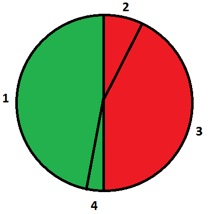

Students Vasya and Petya are studying at the BSU (Byteland State University). At one of the breaks they decided to order a pizza. In this problem pizza is a circle of some radius. The pizza was delivered already cut into n pieces. The i-th piece is a sector of angle equal to ai. Vasya and Petya want to divide all pieces of pizza into two continuous sectors in such way that the difference between angles of these sectors is minimal. Sector angle is sum of angles of all pieces in it. Pay attention, that one of sectors can be empty.
The first line contains one integer n (1 ≤ n ≤ 360) — the number of pieces into which the delivered pizza was cut.
The second line contains n integers ai (1 ≤ ai ≤ 360) — the angles of the sectors into which the pizza was cut. The sum of all ai is 360.
Print one integer — the minimal difference between angles of sectors that will go to Vasya and Petya.
4
90 90 90 90
0
3
100 100 160
40
1
360
360
4
170 30 150 10
0
In first sample Vasya can take 1 and 2 pieces, Petya can take 3 and 4 pieces. Then the answer is |(90 + 90) - (90 + 90)| = 0.
In third sample there is only one piece of pizza that can be taken by only one from Vasya and Petya. So the answer is |360 - 0| = 360.
In fourth sample Vasya can take 1 and 4 pieces, then Petya will take 2 and 3 pieces. So the answer is |(170 + 10) - (30 + 150)| = 0.
Picture explaning fourth sample:

Both red and green sectors consist of two adjacent pieces of pizza. So Vasya can take green sector, then Petya will take red sector.